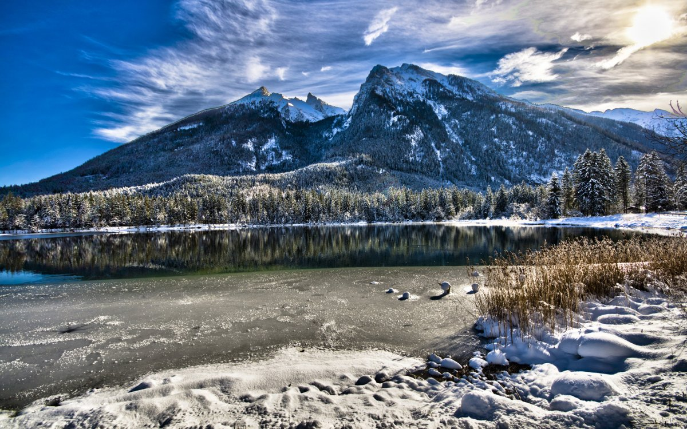
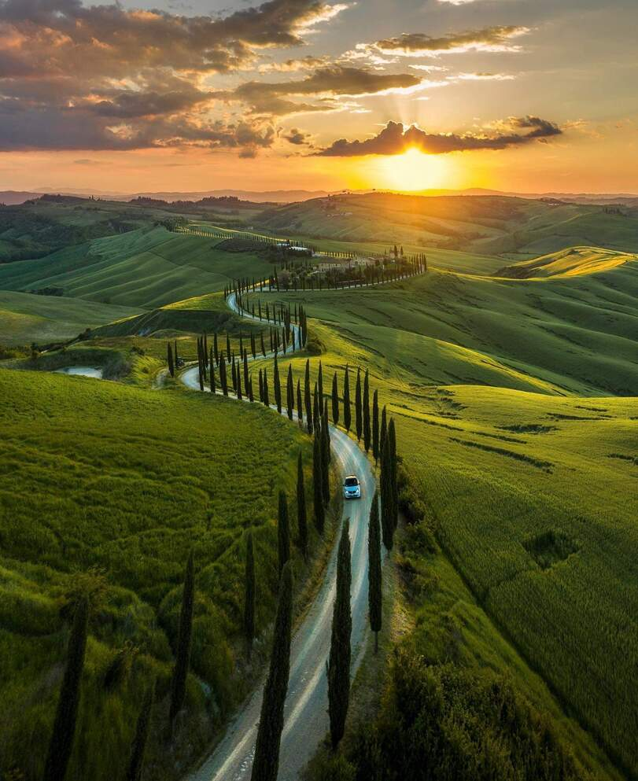
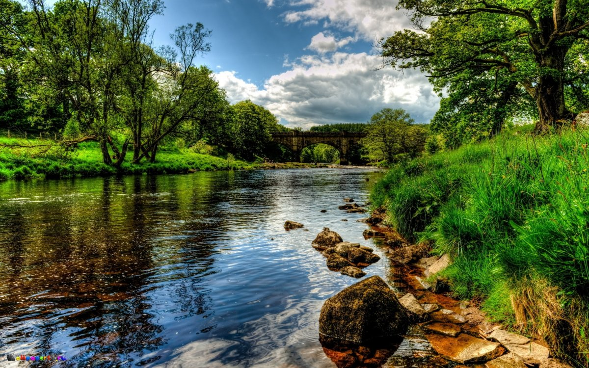
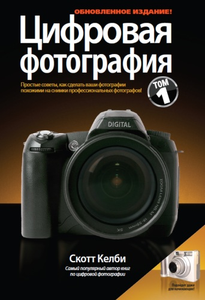
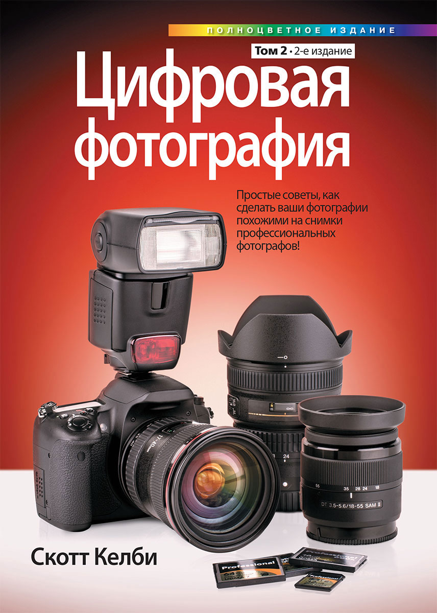
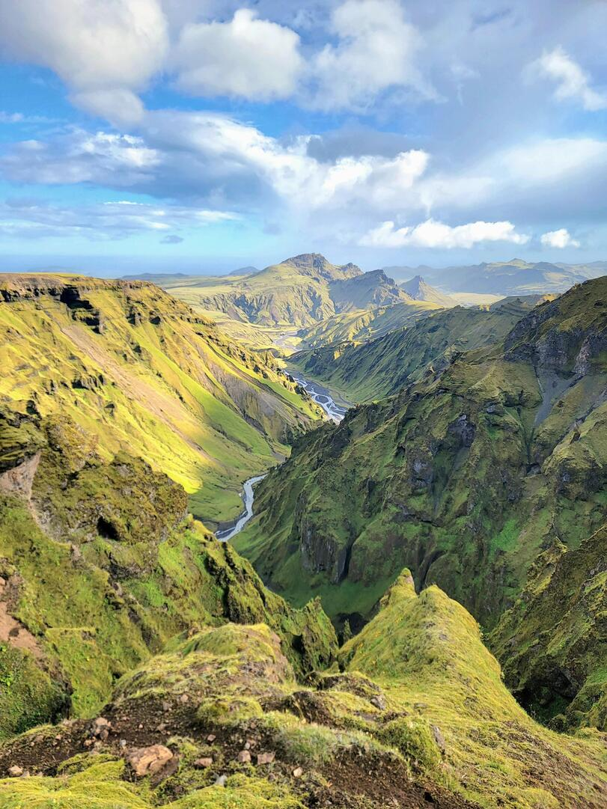
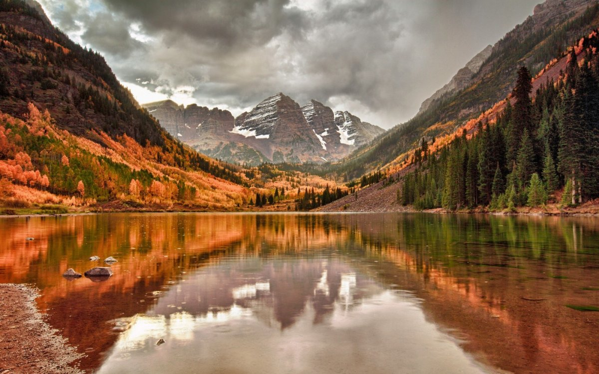
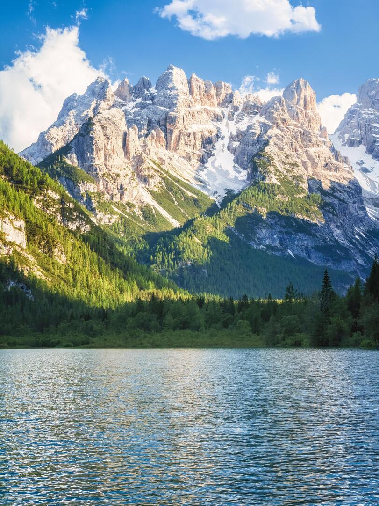

Мои работы

Замерзшее озеро

Пейзажи природы

Пейзаж озеро
Добро пожаловать на мой сайт
Цифровая и обычная фотография имеют между собой кое-что общее. В первую очередь, у них абсолютно одинаковый принцип создания изображения - оно создаётся светом, попадающим через объектив на светочувствительную поверхность. На этом сходство двух видов фотографии практически заканчивается, и начинаются различия. Физическая фиксация изображения в цифровом фотоаппарате происходит совершенно на иной основе, нежели в плёночном. Главное отличие цифровых камер от плёночных заключается в том, что цифровая картинка мира создаётся в них не на плёнке, а на светочувствительном электронном сенсоре. Это самая важная часть цифровой камеры, которая и определяет качество изображения, состоящего из нулей и единиц. Сенсор - это матрица светочувствительных элементов. Когда свет попадает на один из элементов, из которых состоит матрица, этот элемент генерирует электрический сигнал, характеристики которого зависят от интенсивности светового потока. Каждый светочувствительный элемент создаёт одну точку получаемого изображения, или пикселе. Количество таких элементов в матрице определяет одну из важнейших характеристик камеры - её разрешение. Затем процессор камеры с помощью программного обеспечения преобразует электрические сигналы элементов матрицы в двоичный код, состоящий из нулей и единиц. Этот код цифровая камера записывает и сохраняет. Самые распространённые пиксельные значения разрешений камеры соответствуют тем, которые применяются в компьютерных мониторах: 640х480, 800х600, 1024х768, 1280х1024, 1600х1200 и т. д. Первое число в данном обозначении означает количество пикселов по горизонтали, второе - по вертикали. Перемножив их, можно выяснить разрешение камеры. К примеру, трёхмегапиксельная цифровая камера позвоволяет получить снимок с разрешением 2000х1500.
Тому, кто приобретает свою первую цифровую камеру, за количеством пикселов поначалу гнаться не стоит. Для обычного семейного фотоальбома, отпускных фотографий или съёмки вечеринок вполне достаточно двух или трёх млн. пикселов (т.е. 2 или 3 мегапикселов). Если разрешение ваша камеры меньше двух мегапикселов, но вы предполагаете сделанные этой камерой картинки только в Интернете, то проблемы с качеством у вас не возникнет. Но совсем другое дело, если вы хотите увеличивать снимки и распечатывать их. Фотографии, сделанные двухмегапиксельной камерой сохраняют хорошее качество в формате стандартной фотобумаги - 10х15 см. Но чтобы распечатать изображение большого размера, разрешение камеры может оказаться недостаточно. Невысокое разрешение камеры означает недостаток информации для верного отображения снимка, при увеличении до определённых размеров изображение и распадётся на квадратики - пикселы. А круглые и искривленные границы предметов при этом оказываются как бы состоящими из ступенек. Недостаточное разрешение так же может вызывать искажение цветов. Понятно, что в этом случае о качестве изображения не может быть и речи. Как видите, особенности цифровой фотографии накладывают на снимки значительные ограничения. Понятное дело, все особенности цифровой съёмки вытекают из устройства цифровой камеры. Слово "пиксел" образовано сокращением английских слов picture element (элемент изображения). Однако в современном английском языке оно пишется так: pixel. Поэтому не удивляйтесь, встречая в рекламных буклетах или компьютерных программах обозначение px или pix.
Работы учеников

Горы

Озеро в горах

Горный пейзаж